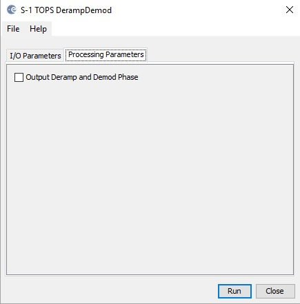

Sentinel-1 Deramp and Demodulation
Deramp and demodulation is a key step in the
processing of TOPS data. The application of deramping brings the
Doppler spectrum of one burst to baseband. Then the DC component in the
spectrum can be removed with the help of demodulation. Without applying these
operations, artefacts will be introduced in operations such as
interpolation or azimuth filtering. In practice, the deramp and
demodulation can be combined in one processing step. This operator performs the deramp and demodulation to the S-1 SLC
split product.
Input
- Before running this operator, user should first run S-1 TOPS
Split operator to the source S-1 SLC products to get the split product.
- The input to the operator cannot be deburst product or a stack of products such as the output of Back Geocoding operator.
Output
- The output of the operator is the deramped and demodulated S-1 SLC product.
Parameters Used
- Output Deramp and Demod Phase: Checkbox for outputing deramp and demod phase as a band.

References
- De Zan, F., Monti Guarnieri, A. (2006). TOPSAR: Terrain observation by progressive scans. IEEE Transactions on Geoscience and Remote Sensing, 44(9), 2352–2360. doi:10.1109/TGRS.2006.873853
- Yagüe-Martínez, N., Prats-Iraola, P., Rodríguez González, F., Brcic, R., Shau, R., Geudtner, D., Eineder, M., Bamler, R. (2016). Interferometric processing of Sentinel-1 TOPS data. IEEE Transactions on Geoscience and Remote Sensing, 54(4), 2220–2234. doi:10.1109/TGRS.2015.2497902
- Miranda, N. (2017). Definition of the TOPS SLC deramping function for products generated by the S-1 IPF. ESA technical note COPE-GSEG-EOPG-TN-14-0025, Issue 1, Revision 3, 10 January 2017.
Processing parameters (reference)
GPT operator: TOPSAR-DerampDemod. Generated from the operator source; parameter names are those used in GPT and graph XML.
| Parameter | Type | Default | Allowed values | Unit | Description |
|---|
outputDerampDemodPhase | boolean | false | | | Output Deramp and Demod Phase |
Background
Prerequisites
- Sentinel-1 SLC product.
- Not a coregistered stack and not a debursted product.
- Recommended: run TOPS Split first, as the page describes (the code does not require it).
Next step